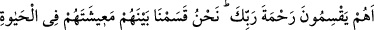
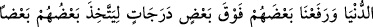
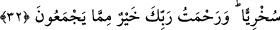
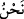

iki kente nispet edilmesi birinden diğerine hicret etmesi sebebiyle de olabilir. Mekkî
(Mekkeli), Medenî (Medineli), Mısrî (Mısırlı), Şâmî (Şamlı) denildiği gibi. Bu durum
kişinin bu kentlerden birinde dört yıl ikâmet etmesiyle gerçekleşir. Hadis usulcüleri
bunu açıkça beyan etmişlerdir. Sonra onlar bu büyük ve ağır kelimeyi, Kur’ân’ın gerçek
Kur’an olduğunu itiraf edip gûyâ kendilerince büyük sayılan bu kişilerden birine değil
de Peygamberimiz (s.a.)’e inmiş olmasına hasetlerinden dolayı söylemiş değillerdir.
Bilakis bu sözleriyle Kur’ân’ın gerçek Kur’an olmadığına istidlâl etmiş, delil getirmiş
olmaktadırlar. Bunun îzâhı şöyledir: Onların iddiâsına göre şâyet bu okunan şey gerçek
Kur’an olsaydı, işte bu iki büyük adamdan birine inerdi. Çünkü onlar, risâletin pek
büyük bir makam olduğuna, dolayısıyla yine ancak mal ve mevki bakımından büyük
olan birine lâyık olabileceğine inanmaktaydılar. Ancak şunu bilmiyorlardı ki büyük
adam, Allah’ın büyük sayıp dünya ve âhirette kadr ü kıymetini ve şerefini yücelttiği
kimsedir. Yoksa onların büyük saydığı kimseler değildir. Zîrâ onlar nezdinde nice
büyük sayılanlar, Allah katında zelîl ve hakîrdirler. Akside böyledir.
Yüce Allah rahmetini dilediği kuluna tahsîs eder. Allah mesajını koyacağı yeri,
(risâlet vazifesini kime vereceğini, kimi peygamber olarak göndereceğini) bilir. Onların
“büyük adam” sözlerinde Peygamberimiz (s.a.)’e tâzim ve saygı vardır. Allah
Peygamberimiz (s.a.)’e salât ve selâm etsin. Onun şân ve şerefi hep yücedir.
32. Rabbinin rahmetini onlar mı paylaştırıyorlar? Dünya hayatında onların
geçimliklerini aralarında biz paylaştırdık. Birbirlerine iş gördürmeleri için kimini
ötekine derecelerle üstün kıldık. Rabbinin rahmeti onların biriktirdikleri şeylerden
daha hayırlıdır.
Risâlet ve nübüvvet anahtarlarını ellerinde bulundurup “Rabbinin rahmetini onlar mı
paylaştırıyorlar” ve onu istedikleri yere koyuyorlar? Hatta herkese nübüvvet kapısını
açmak istiyorlar. Burada müşrikler reddedilmekte, onların bilgisizlikleri ortaya
konulmakta ve onların haksızca sergiledikleri baskı ve zulümlerden insanlar hayrete
sevkedilmektedir. Rahmetten murad; nübüvvet yani peygamberliktir.
“Dünyâ hayâtında onların geçimliklerini” maîşet sebeplerini “aralarında biz
paylaştırdık.” “Maîşet”, insanın kendisiyle yaşayıp gıdâlandığı, bünyesinin kıvâmına
sebep saydığı şeydir. Çünkü “ayş” canlıya mahsus bir hayattır. Ehli-Sünnet ve’l-cemaat
mezhebine göre bu taksim, helâl-haram hepsini kapsar. Onların bu işi tedbîr etmekten
tamamen âciz olduklarını bildiğimizden birçok hikmet ve maslahata dayalı irâdemizle
biz, işimizi onlara ısmarlamadık. Nitekim müsnedün ileyh olan “__WORD__/nahnü” kelimesinin